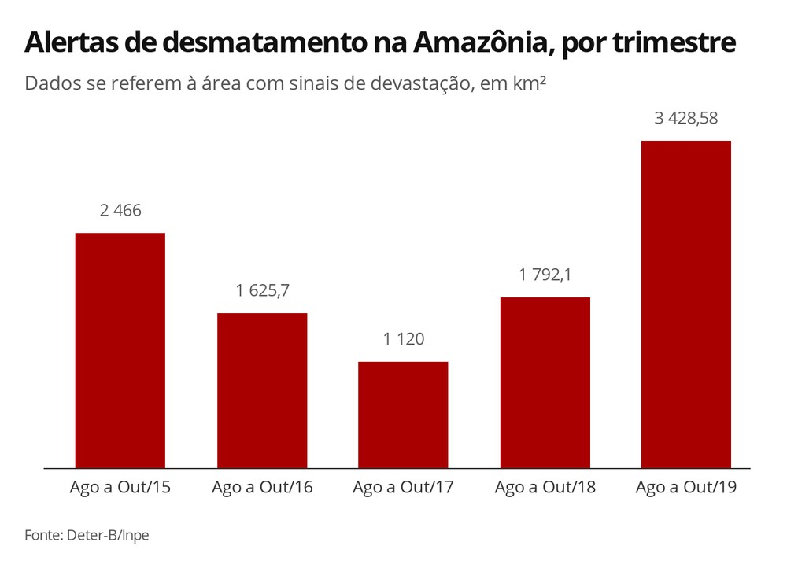

Alertas de desmatamento na Amazônia crescem 5,42% em outubro de 2019
A área sob alerta de desmatamento na Amazônia teve um aumento de 5,42% no mês de outubro de 2019, comparado ao mesmo mês do ano anterior. São 554,77 km² de floresta com sinais de devastação neste ano, o segundo pior outubro da série histórica, que começa em 2015.
Esse número não é classificado pelo governo federal como taxa oficial de desmatamento, que é medida por outro sistema do Inpe, o Prodes. Os dados do Prodes são divulgados anualmente e abrangem o período de julho de um ano a agosto do ano seguinte. O período que se encerra em 2019 ainda não foi divulgado, mas nos últimos três anos, os alertas têm sido confirmados nas taxas oficiais de desmatamento.
Na análise por trimestre, de agosto a outubro de 2019 foram 3.428,58 km² sob alerta de desmate, contra 1.792,1 km² no mesmo trimestre de 2018.
A análise de dados comparativos por trimestre evita distorções sazonais que possam ser causadas por problemas na leitura dos satélites, como a presença de nuvens de chuva, por exemplo.